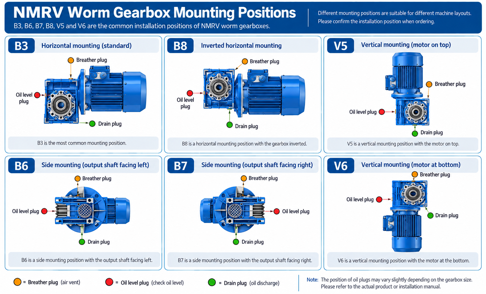

What mounting positions are available?
Common NMRV positions are B3 horizontal, B8 inverted horizontal, B6 and B7 side mounting, and V5 and V6 vertical mounting. The correct choice depends on the machine frame, shaft direction, motor position and clearance.
How should I choose the position?
- B3: standard horizontal mounting.
- B6 / B7: side mounting for left- or right-facing output.
- B8: inverted horizontal mounting.
- V5 / V6: vertical mounting with the motor above or below.
For a new conveyor, packaging line or mixer, draw the input and output centerlines first, then match the gearbox position. See the NMRV worm gearbox range.
Does mounting position affect lubrication?
Yes. Oil level, oil quantity, breather plug and drain plug positions can change when orientation changes. Do not simply rotate a gearbox and assume the original oil level remains correct.
Can the position be changed after delivery?
Often the housing supports more than one position, but lubrication and plug locations must be rechecked. Also verify motor terminal-box orientation, flange clearance and shaft alignment.
What information should I provide when ordering?
- NMRV size and ratio
- Motor power, voltage, frequency and speed
- Input and output shaft directions
- Mounting position: B3, B6, B7, B8, V5 or V6
- Output bore and mounting dimensions
- Application, duty cycle and required torque
Compare the RV63 guide, RV75 guide and RV90 guide. For conveyor sizing, see the conveyor gearbox page and ratio and torque calculator.
Conclusion
B3 is a common horizontal position, while B6, B7, B8, V5 and V6 solve different shaft and layout constraints. Confirm mounting, lubrication and plug arrangement together before purchase. Send SMK your drawing or installation photo for a configuration check.